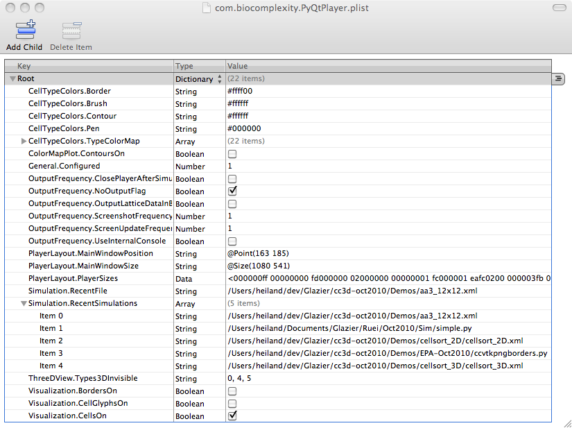
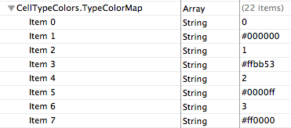
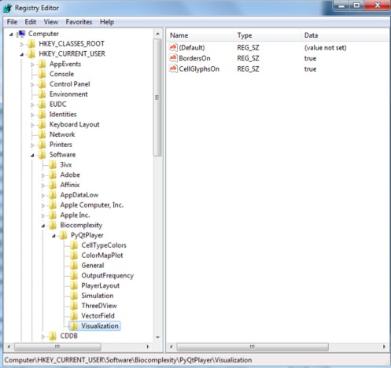

The Qt prefs are set via the QSettings class (rf. player/Configuration/Settings.py). (old) OSX: open ~/Library/Preferences/com.biocomplexity.PyQtPlayer.plist (new) OSX: open ~/Library/Preferences/com.biocomplexity.PyQtPlayerNew.plist (in an earlier version of cc3D, the filename may have been: com.biocomplexity.CompuCellPlayer.plist) Windows: one suggestion was: "C:\Document and Settings\user\Local Settings\Application Data", but doesn't seem to be the case. Maciek said it's stored in the "registry". So, from Start, run 'regedit' and look for the 'Biocomplexity' folder. During the cc3d workshop 2010, Tom Knudsen had a problem in that the Vis: FPP Links was always checked when he would start up cc3d (on Win XP). We eventually just did Start -> Run -> regedit and under the Software folder, deleted the Biocomplexity folder, which contained the Qt prefs in PyQtPlayer. (James later had the same problem and this worked for him also)


On Windows, the settings are buried(!) in the registry, as shown in the image below. We have had instances of certain menu items being always checked ON (e.g. Vis->FPP Links) when you would re-start cc3d. In these instances, we had to open up the registry (Start->Run->"regedit") and right click/delete the entire 'Biocomplexity' folder.

On Linux:
heiland@family-ubu:~/dev/cc3d-6-20-10/player$ grep qsett */*.py
Configuration/__init__.py: Configs.settings = QSettings(QSettings.NativeFormat, QSettings.UserScope,
Configuration/Settings.py: settings = QSettings(ORGANIZATION, APPLICATION)
Configuration/Settings.py: settings = QSettings (ORGANIZATION, APPLICATION)
heiland@family-ubu:~/dev/cc3d-6-20-10/player$ grep organiz */*.py
Configuration/__init__.py:(ORGANIZATION, APPLICATION) = ("Biocomplexity", "PyQtPlayer")
Configuration/__init__.py: ORGANIZATION, APPLICATION)
Configuration/Settings.py:(ORGANIZATION, APPLICATION) = ("Biocomplexity", "CompuCellPlayer")
Configuration/Settings.py: settings = QSettings(ORGANIZATION, APPLICATION)
Configuration/Settings.py: settings = QSettings (ORGANIZATION, APPLICATION)
The file appears in the user's home dir in the .config dir (still not sure how to edit it):
heiland@family-ubu:~/.config/Biocomplexity$ head PyQtPlayer.conf
[Visualization]
BordersOn=false
CellGlyphsOn=false
[Simulation]
RecentSimulations=/home/heiland/dev/cc3d-6-20-10/Demos/cellsort_2D/cellsort_2D.xml
RecentFile=/home/heiland/dev/cc3d-6-20-10/Demos/cellsort_2D/cellsort_2D.xml
[PlayerLayout]
PlayerSizes="@ByteArray(\0\0\0\xff\0\0\0\0\xfd\0\0\0\x2\0\0\0\0\0\0\x1\0\0\0\x2;\xfc\x2\0\0\0\x3\xfb\0\0\0\x1e\0M\0o\0\x64\0\x65\0l\0\x45\0\x64\0i\0t\0o\0r\0\x44\0o\0\x63\0k\x1\0\0\0\x39\0\0\x1\x1a\0\0\0k\0\xff\xff\xff\xfb\0\0\0\x16\0P\0l\0u\0g\0i\0n\0s\0\x44\0o\0\x63\0k\x1\0\0\x1Y\0\0\x1\x1b\0\0\0k\0\xff\xff\xff\xfb\0\0\0\x1e\0L\0\x61\0t\0t\0i\0\x63\0\x65\0\x44\0\x61\0t\0\x61\0\x44\0o\0\x63\0k\0\0\0\x1\xba\0\0\0\xba\0\0\0k\0\xff\xff\xff\0\0\0\x3\0\0\x2~\0\0\0\x8d\xfc\x1\0\0\0\x1\xfb\0\0\0\xe\0\x43\0o\0n\0s\0o\0l\0\x65\x1\0\0\x1\x6\0\0\x2~\0\0\0{\0\xff\xff\xff\0\0\x2~\0\0\x1\xa8\0\0\0\x1\0\0\0\x4\0\0\0\x1\0\0\0\b\xfc\0\0\0\x1\0\0\0\x2\0\0\0\x4\0\0\0\x14\0S\0i\0m\0T\0o\0o\0l\0\x62\0\x61\0r\x1\0\0\0\0\xff\xff\xff\xff\0\0\0\0\0\0\0\0\0\0\0\x16\0\x46\0i\0l\0\x65\0T\0o\0o\0l\0\x62\0\x61\0r\x1\0\0\0\x8d\xff\xff\xff\xff\0\0\0\0\0\0\0\0\0\0\0\x16\0V\0i\0\x65\0w\0T\0o\0o\0l\0\x62\0\x61\0r\x1\0\0\0\xfa\xff\xff\xff\xff\0\0\0\0\0\0\0\0\0\0\0\x1a\0W\0i\0n\0\x64\0o\0w\0T\0o\0o\0l\0\x62\0\x61\0r\x1\0\0\x1\x96\xff\xff\xff\xff\0\0\0\0\0\0\0\0)"